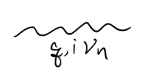
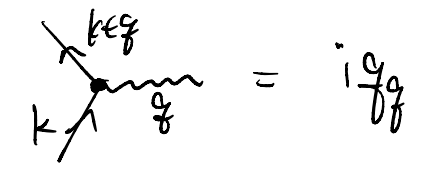
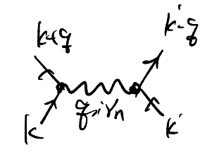
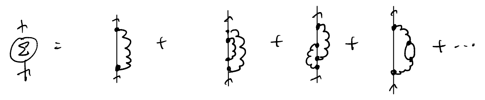
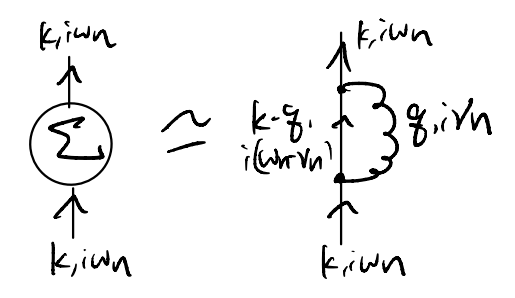
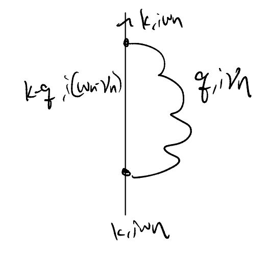

lec23
Contents
lec23¶
Note
This is NOT the official course PHYS5340 website yet!
If you are student in this course, always take the lecture notes as the correct one if you find any differences between lecture notes and website contents
If you are just passerby, use the materials below at your own risk. Since the website is still the first version (even alpha version), there could be some typos, incorrect/inaccurate/improper statements.
Note
All materials in this website are based on the course offered at HKUST
Note
As a “casual course”, we provide only general references but not specific ones to the materials introduced
Note
All materials’ copyright in this website are reserved for the course lecturer
If you want to use the material somewhere, you might need to contact the lecturer first
Note
Contribution is always welcome. if you find any typo, incorrect/inaccurate/improper statements or necessary references, do not hesitate to
raise an issue on github repo
make an pull request on github repo
contact me directly
20220429
Topics
Matsubara Green’ functions in frequency space
Electron-phonon problem
Electron self-energy
Goals
Understand the new features of the finite-T problem in frequency space
Demonstrate the formalism in the electron-phonon problem
Matsubara Green’s functions in frequency space¶
As usual, let us now Fourier transform to the frequency space. Since all data is contained within the interval \(\tau \in \left[ 0,\beta \right]\), we have
where the Matsubara frequencies for \(n\in\mathbb{Z}\) are
verify that, for the fermionic one, the phase factor satisfies
as desired.
The inverse transform is now given by
As a quick demonstration, let us now apply the general discussions above to the bare Matsubara Green’s functions.
Free fermions:
Free bosons
Notice how the expressions resemble the zero-temperature results we have derived! In fact, the zero-temperature limit can be recovered by simply “Wick rotation” back to real frequencies (and real time):
In this sense, when defined on the complex plane there is only “one” propagator, although to differentiate, e.g., the retarded vs Feynman propagator, one needs to specify the frequency integral contour (typically through Feynman’s \(i\varepsilon\) prescription, i.e., for retarded Green’s function we Wick rotate by \(i\omega_n\to \omega+i\delta\) etc.)
But where is the temperature? In the Matsubara formalism, it is encoded in the spacing between the allowed frequencies. In other words, it is encoded in the sum over frequencies.
Having developed the basic formalism, let’s put it to use in a physical problem.
Electron-phonon problem¶
Recall the impurity-phonon problem we studied a couple of months ago, which served as our first nontrivial, but still exactly solved problem. After half a semester, let us “promote” our problem to a general quantum many-body problem, and see how we could attack it perturbative.
Consider electrons and phonons described respectively by (here, we roughly follow the notations in Coleman)
where for simplicity we have restricted our model to a single phonon mode, say the longitudinal acoustic mode. Let us now consider the possible form of the electron-phonon coupling. As fermion parity is conserved (or, one can say the Hamiltonian is always a bosonic operator) we have to start with a minimum of two fermion operators. In our problem, the electron number is conserved, so we consider some \(\hat{c}_{k'\sigma '}^{\dagger}\hat{c}_{k\sigma}\) to start with. Spin rotation invariance requires spin to be a spectator, “dummy” index, and so we have \(\sum_{\sigma}{\hat{c}_{k'\sigma}^{\dagger}\hat{c}_{k\sigma}}\). In contrast, the phonon operators can enter “alone” into the Hamiltonian, and so the minimal coupling takes the form
Under (discrete) translation, the momentum-space operators pick up phases
and so translation invariance fixes \(k'=k+q\)
We also assume time-reversal symmetry,
Lastly, for simplicity let us assume \(g_{kq}\) is independent of \(k\). This cannot be easily justified based on the “symmetry principles” we are using here, but can be motivated from a more microscopic treatment (similar to our earlier discussion in the impurity-phonon model; see e.g. Coleman 8.7 for details).
These considerations / assumptions bring us down to
The full Hamiltonian \(\hat{H}=\hat{H}_e+\hat{H}_{\mathrm{ph}}+\hat{H}_{\text{e-ph}}\) is slightly simplified version of what is known as the “Frohlich Hamiltonian”. This can be viewed as the solid analog of QED, in which the role of the EM gauge field is played by the phonons. Note that we ignore e-e interactions here.
Unlike the impurity-phonon model, the current model is not (known to be) exactly solvable. To appreciate why, recall our solution to the impurity-phonon problem relied on the observation that the electron-number operators \(\hat{n}_i\) for each orbital commute with the Hamiltonian, i.e., \(\left[ \hat{n}_i,\hat{H} \right] =0\). Such conservation of the occupation numbers, however, are not “protected” by any physical principles, and so was instead a special feature of the model we wrote down. Such conservation is absent in the present problem, and as such we can only solve the physical properties perturbatively.
To be more concrete, we split the Hamiltonian into
and the perturbation theory is obtained by going to the interaction picture with respect to \(\hat{H}_0\). For instance, let us compute the Matsubara electron propagator. Suppressing the spin indices,
where
as we have mentioned repeatedly, the expression above is essentially identical with the Gell-Mann-Low formula, except for the Euclidean time (and factors of \(i\)), and the definition of the expectation value (which is thermal).
We now claim without proof that the perturbation expansion is essentially identical to that we have discussed for the zero-temperature problem, in particular
Wick’s theorem still applies, and so the expectation value \(\langle\cdots\rangle_0\) can be evaluated through the combinatorial product and some of the basic contractions
The contractions can be organized through diagrams, i.e., we can still use Feynman diagrams
The linked cluster theorem holds, and so the presence of the denominator simply instructs us to focus on the connected diagrams
Dyson’s equation holds, and so we can encode all the interaction correction to the self-energy.
Although we will not prove the validity of the treatment (neither did we really “prove” it for the zero-temperature case; we just tried to explain why it is plausible), it may be good to briefly discuss how one could establish that.
First, for the Wick’s theorem, we note that the version needed is a “weaker” version concerning only the expectation values. In the modern treatment this is usually established through a path integral treatment with “sources” inserted, followed by taking functional derivatives. See, e.g., Coleman 8.4 for a discussion.
Alternatively, as a slightly less popular approach one can actually (formally) map the finite-temperature physics to the zero-temperature case by “purifying” the thermal density matrix into a pure state defined on a doubled system. This is called the thermal field dynamics / double. One can then imply that the thermal expectation value form of Wick’s theorem through that of the TFD.
One might wonder about the operator version though, which is apparently stronger. Indeed, according to hep-ph/9601268 this was a topic of confusion. The conclusion from that paper is that, the operation form still holds, but with a suitably generalized notion of path ordering (replacing time and normal ordering).
Given the Wick’s theorem continues to hold, the rest of the discussion follows in essentially the same way. Long story short, we can simply treat the present perturbation theory in the same way as we did. THere are two main differences in practice:
The Feynman rules (i.e. transcribing diagrams into mathematical expressions) have some modifications on factors of \(i\) versus \(-i\) etc.
The frequency integrals now become sums over the discrete Matsubara frequencies
Modification (1) is mild; in this course we didn’t pay too much attention to those factors anyway (in practice, of course, it is important to get all the factors right in any serious calculation). Modification (ii), in contrast, is more profound. We will see how that is achieved in the following.
Electron self-energy¶
Compared to the jellium model, the present perturbation theory is modified in two ways:
We have another particle, the phonon, which comes with its own propagator
Instead of a (normal ordered) density-density interaction between the electrons, we have a coupling between electrons and phonons.
Diagrammatically, we can represent them by
(1) phonon propagator

(2) e-ph coupling vertex \(ig_q\)

As one might anticipate from the notations, the phonons can be viewed as mediation interactions between the electrons. Indeed, the following diagram

can be understood as an effective interaction. In particular, notice that while \(i\nu_n\) corresponds to the energy difference \(\sim\varepsilon_{k+q}-\varepsilon_k\), \(\omega_q\) is at the phonon energy scale \(\omega_D\). Curiously the effective interaction changes sign for \(\delta\varepsilon \gtrsim \omega_D\) vs \(\delta\varepsilon \lesssim \omega_D\): in particular, the interaction is attractive as \(\delta \varepsilon\to 0\). THis corresponds to the celebrated phonon-mediated attraction!
There are of course many questions one could investigate within the electron-phonon model. In the interest of time let us focus on the electron self-energy. Similar to before, we can reconcile the self-energy with the 1PI diagrams:

Let us focus on the lowest order diagram

This is actually fairly well-justified as an approximation, but we will not discuss why here in the interest of time (see, e.g., Coleman 8.7.3). Translating our diagram into an expression

Now we “only” need to evaluate the sum over the Matsubara frequencies – but how do we do that?